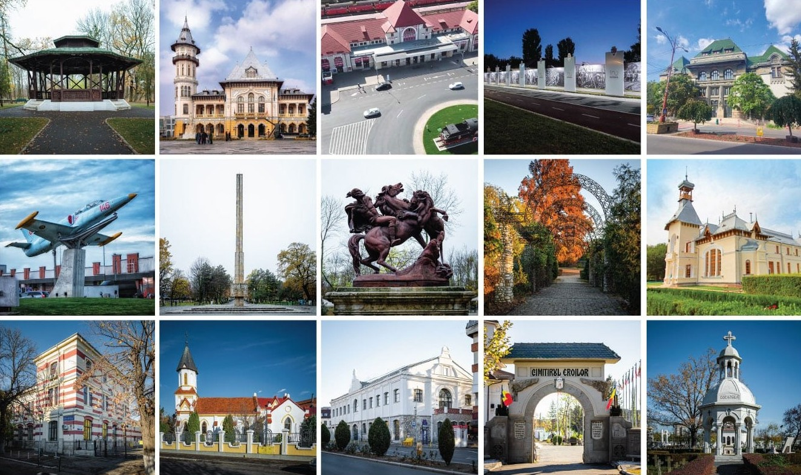

Acasă (la propriu și la figurat)
Acasă
Istorie și atracții turistice
Geografie, Viața în Buzău & Harta orașului
Viața Urbană, Economia și Siguranța Publică
Colegiul Național „Bogdan Petriceicu Hasdeu”
